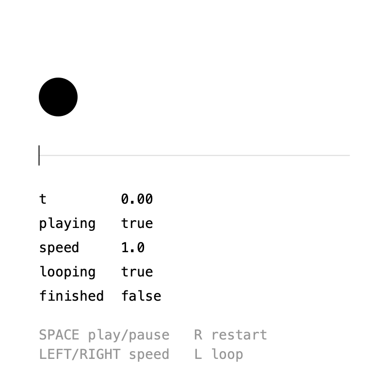
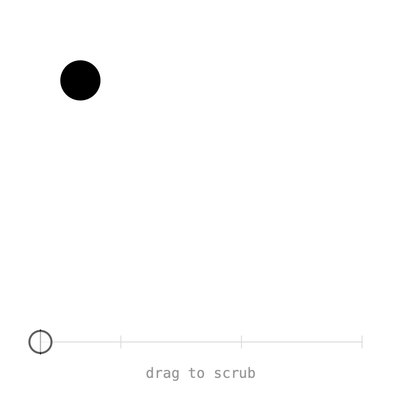
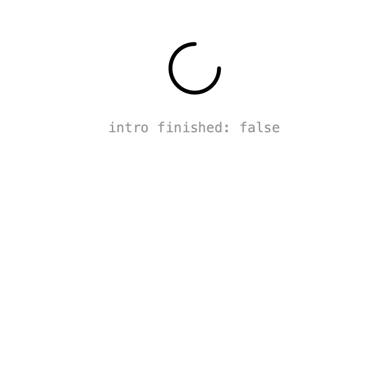
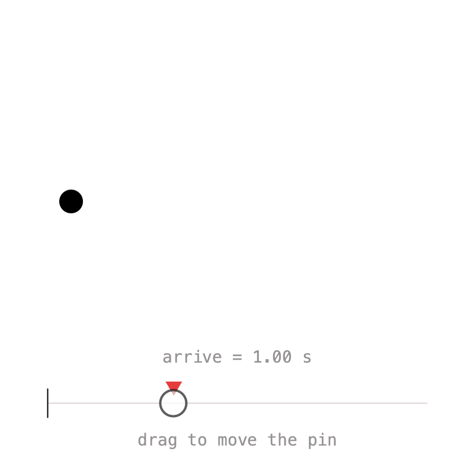
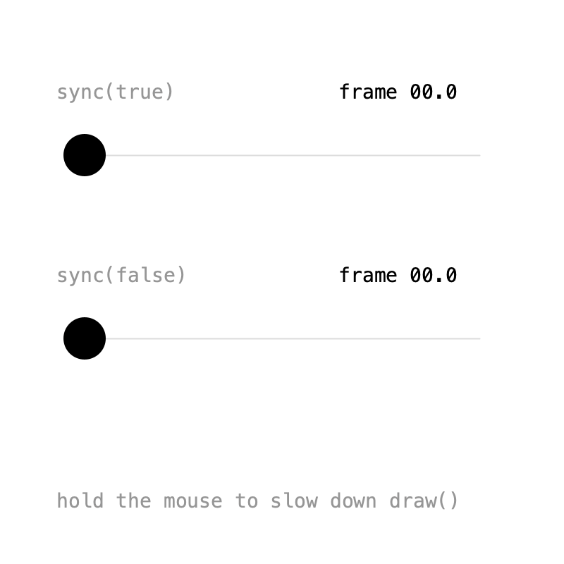

3. Timelines¶
So far every value followed the default timeline returned by Keyed.init(). In this chapter you create timelines of your own, control their playback, scrub through them, run several at once, retime keys with pins, and count in frames instead of seconds.
Controls¶

A Timeline is a clock. Create one with new Timeline() and attach values to it with setTimeline():
Keyed.init(this);
tm = new Timeline().setDuration(3);
x = Keyed.ofFloat()
.setTimeline(tm)
.key(Key.at(0).setEasing(1 / 3f), 60f)
.key(Key.at(1.5f).setEasing(1 / 3f), 340f)
.key(Key.at(3).setEasing(1 / 3f), 60f);
Note
Call Keyed.init(this) first: only timelines created after it advance with the sketch.
The timeline can then be controlled while it runs:
| Method | What it does |
|---|---|
play(boolean) |
pauses or resumes; isPlaying() tells which |
to(t) |
jumps to time t |
setSpeed(s) |
2 is twice as fast; negative speeds play backwards |
loop(boolean) |
without looping, the timeline stops at its duration |
t() |
the current time |
isFinished() |
whether a non-looping timeline reached its end |
In the GIF, the timeline is paused with Space, then played backwards at speed −0.5, and finally sped up again.
Full sketch: Controls
import ch.domizai.keyed.*;
Timeline tm;
Keyed<Float> x;
void settings() {
size(400, 400);
}
void setup() {
// Call init() first: timelines created after it advance with the sketch.
Keyed.init(this);
textFont(createFont("Courier", 14));
// A timeline of our own, 3 seconds long and looping.
tm = new Timeline().setDuration(3);
// setTimeline() makes x follow tm instead of the default timeline.
x = Keyed.ofFloat()
.setTimeline(tm)
.key(Key.at(0).setEasing(1 / 3f), 60f)
.key(Key.at(1.5f).setEasing(1 / 3f), 340f)
.key(Key.at(3).setEasing(1 / 3f), 60f);
}
void draw() {
background(255);
noStroke();
fill(0);
circle(x.value(), 100, 40);
// Progress bar with the playhead.
stroke(220);
line(40, 160, 360, 160);
stroke(0);
float head = map(tm.t(), 0, tm.duration(), 40, 360);
line(head, 150, head, 170);
fill(0);
text("t " + nf(tm.t(), 1, 2), 40, 210);
text("playing " + tm.isPlaying(), 40, 235);
text("speed " + nf(tm.speed(), 1, 1), 40, 260);
text("looping " + tm.isLooping(), 40, 285);
text("finished " + tm.isFinished(), 40, 310);
fill(150);
text("SPACE play/pause R restart", 40, 350);
text("LEFT/RIGHT speed L loop", 40, 370);
}
void keyPressed() {
if (key == ' ') {
tm.play(!tm.isPlaying());
} else if (key == 'r' || key == 'R') {
// Jumps back to the start.
tm.to(0);
} else if (key == 'l' || key == 'L') {
// Without looping the timeline stops at its duration.
tm.loop(!tm.isLooping());
} else if (keyCode == RIGHT) {
tm.setSpeed(tm.speed() + 0.5f);
} else if (keyCode == LEFT) {
// Negative speeds play backwards.
tm.setSpeed(tm.speed() - 0.5f);
}
}
Scrubbing¶

Because to(t) jumps to any time, a progress bar is easy to make draggable. Pause while dragging, so the timeline doesn't advance on its own:
void draw() {
if (mousePressed) {
float t = map(constrain(mouseX, barX0, barX1), barX0, barX1, 0, tm.duration());
tm.to(t);
}
...
}
void mousePressed() {
tm.play(false);
}
void mouseReleased() {
tm.play(true);
}
Full sketch: Scrubbing
import ch.domizai.keyed.*;
Timeline tm;
Keyed<PVector> pos;
float barX0 = 40, barX1 = 360, barY = 340;
void settings() {
size(400, 400);
}
void setup() {
Keyed.init(this);
textFont(createFont("Courier", 14));
textAlign(CENTER, CENTER);
tm = new Timeline().setDuration(4);
pos = Keyed.ofPVector()
.setTimeline(tm)
.key(Key.at(0).setEasing(1 / 3f), new PVector(80, 80))
.key(Key.at(1).setEasing(1 / 3f), new PVector(320, 80))
.key(Key.at(2.5f).setEasing(1 / 3f), new PVector(320, 260))
.key(Key.at(4).setEasing(1 / 3f), new PVector(80, 80));
}
void draw() {
background(255);
if (mousePressed) {
// to() jumps straight to a time.
float t = map(constrain(mouseX, barX0, barX1), barX0, barX1, 0, tm.duration());
tm.to(t);
}
PVector p = pos.value();
noStroke();
fill(0);
circle(p.x, p.y, 40);
// The bar, with a tick for every key.
stroke(220);
line(barX0, barY, barX1, barY);
for (Key k : pos.keys()) {
float kx = map(k.t(), 0, tm.duration(), barX0, barX1);
line(kx, barY - 6, kx, barY + 6);
}
// The playhead.
stroke(0);
float head = map(tm.t(), 0, tm.duration(), barX0, barX1);
line(head, barY - 12, head, barY + 12);
noStroke();
fill(150);
text("drag to scrub", width / 2, barY + 30);
}
// Pause while dragging, so the timeline doesn't advance on its own.
void mousePressed() {
tm.play(false);
}
void mouseReleased() {
tm.play(true);
}
Multiple timelines¶

Each timeline is an independent clock. Here the spinner loops on the default timeline, while a card slides in on a second timeline that plays once. Pass false as the second argument of setDuration() to turn looping off:
intro = new Timeline().setDuration(1.2f, false);
cardY = Keyed.ofFloat()
.setTimeline(intro)
.key(Key.at(0).setEasing(Easing.CUBIC_OUT), 420f)
.key(1.2f, 180f);
Clicking calls intro.to(0), which replays the intro without affecting the spinner.
Full sketch: Multiple
import ch.domizai.keyed.*;
Timeline intro;
Keyed<Float> angle, cardY, cardAlpha;
void settings() {
size(400, 400);
}
void setup() {
// The default timeline loops every second.
Keyed.init(this).setDuration(1);
textFont(createFont("Courier", 14));
textAlign(CENTER, CENTER);
// Without setTimeline(), values follow the default timeline.
angle = Keyed.ofFloat()
.key(0, 0f)
.key(1, TWO_PI);
// A second timeline that plays once: false turns looping off,
// so it stops at the end instead of starting over.
intro = new Timeline().setDuration(1.2f, false);
cardY = Keyed.ofFloat()
.setTimeline(intro)
.key(Key.at(0).setEasing(Easing.CUBIC_OUT), 420f)
.key(1.2f, 180f);
cardAlpha = Keyed.ofFloat()
.setTimeline(intro)
.key(0, 0f)
.key(0.6f, 255f);
}
void draw() {
background(255);
// The spinner keeps turning, whatever happens to the intro.
noFill();
stroke(0);
strokeWeight(4);
float a = angle.value();
arc(200, 70, 50, 50, a, a + PI * 1.5f);
strokeWeight(1);
fill(150);
text("intro finished: " + intro.isFinished(), 200, 130);
noStroke();
fill(0, cardAlpha.value());
rect(80, cardY.value(), 240, 140, 12);
fill(255, cardAlpha.value());
text("click to replay", 200, cardY.value() + 70);
}
void mousePressed() {
// Restarts only the intro; the default timeline is unaffected.
intro.to(0);
}
Pins¶

When several values share a moment, say a ball arriving while it grows and turns red, retiming means editing every key. A Pin is a point in time that several keys can share. Pass the pin instead of a time:
arrive = Pin.at(1);
x = Keyed.ofFloat()
.key(Key.at(0).setEasing(1 / 3f), 60f)
.key(Key.at(arrive).setEasing(1 / 3f), 340f)
.key(Key.at(duration).setEasing(1 / 3f), 60f);
size = Keyed.ofFloat()
.key(0, 20f)
.key(arrive, 80f)
.key(duration, 20f);
Now arrive.to(t) moves the key in all values at once. Drag the pin in the sketch to try it. Use addListener() to get notified when a pin moves.
Full sketch: Pins
import ch.domizai.keyed.*;
float duration = 3;
Pin arrive;
Keyed<Float> x, size;
Keyed<Integer> col;
float barX0 = 40, barX1 = 360, barY = 340;
void settings() {
size(400, 400);
}
void setup() {
Keyed.init(this).setDuration(duration);
textFont(createFont("Courier", 14));
textAlign(CENTER, CENTER);
// A Pin is a point in time that several keys can share.
arrive = Pin.at(1);
// Pass the pin instead of a time. Key.at(pin) adds easing as usual.
x = Keyed.ofFloat()
.key(Key.at(0).setEasing(1 / 3f), 60f)
.key(Key.at(arrive).setEasing(1 / 3f), 340f)
.key(Key.at(duration).setEasing(1 / 3f), 60f);
size = Keyed.ofFloat()
.key(0, 20f)
.key(arrive, 80f)
.key(duration, 20f);
col = Keyed.ofColor()
.key(0, color(0))
.key(arrive, color(230, 60, 60))
.key(duration, color(0));
}
void draw() {
background(255);
if (mousePressed) {
// Moving the pin moves its key in all three values at once.
float t = map(mouseX, barX0, barX1, 0, duration);
arrive.to(constrain(t, 0.2f, duration - 0.2f));
}
noStroke();
fill(col.value());
circle(x.value(), 170, size.value());
// The bar, with the pin and the playhead.
stroke(220);
line(barX0, barY, barX1, barY);
float px = map(arrive.t(), 0, duration, barX0, barX1);
noStroke();
fill(230, 60, 60);
triangle(px - 7, barY - 18, px + 7, barY - 18, px, barY - 6);
stroke(0);
float head = map(Keyed.defaultTimeline().t(), 0, duration, barX0, barX1);
line(head, barY - 12, head, barY + 12);
noStroke();
fill(150);
text("arrive = " + nf(arrive.t(), 1, 2) + " s", width / 2, barY - 40);
text("drag to move the pin", width / 2, barY + 30);
}
Frames instead of seconds¶

If you think in frames, set the unit before creating timelines. Keyed can't read the sketch's frame rate, so pass the same value:
Key times are then frames: keys at 0, 45 and 90 are 3 seconds at 30 fps.
This sketch also shows the two ways a timeline can advance:
sync(true), the default, follows the real clock. Ifdraw()is slow, it skips ahead to stay on time.sync(false)advances exactly one frame perdraw(). Ifdraw()is slow, it slows down, but never skips a frame.
In the GIF, draw() is slowed down for a moment: the top ball jumps ahead while the bottom one falls behind. sync(false) is what you want for exports.
Full sketch: FrameUnit
import ch.domizai.keyed.*;
int fps = 30;
Timeline synced, stepped;
Keyed<Float> a, b;
void settings() {
size(400, 400);
}
void setup() {
frameRate(fps);
textFont(createFont("Courier", 14));
// Keyed can't read the sketch's frame rate, so pass the same value.
Keyed.setFrameRate(fps);
// Count time in frames instead of seconds, for every timeline created afterwards.
Keyed.setUnit(Keyed.FRAME);
Keyed.init(this);
// Follows the real clock, measured in frames.
// If draw() is slow it skips ahead to stay on time.
synced = new Timeline().setDuration(90);
// Advances exactly one frame per draw().
// If draw() is slow it slows down, but never skips a frame.
stepped = new Timeline().setDuration(90).sync(false);
a = bounce(synced);
b = bounce(stepped);
}
// Keys at frames 0, 45 and 90: 3 seconds at 30 fps.
Keyed<Float> bounce(Timeline tm) {
return Keyed.ofFloat()
.setTimeline(tm)
.key(Key.at(0).setEasing(1 / 3f), 60f)
.key(Key.at(45).setEasing(1 / 3f), 340f)
.key(Key.at(90).setEasing(1 / 3f), 60f);
}
void draw() {
// Simulates a heavy sketch while the mouse is held down.
if (mousePressed) {
delay(100);
}
background(255);
lane("sync(true)", synced, a, 110);
lane("sync(false)", stepped, b, 240);
fill(150);
text("hold the mouse to slow down draw()", 40, 360);
}
void lane(String label, Timeline tm, Keyed<Float> x, float y) {
fill(150);
text(label, 40, y - 40);
fill(0);
text("frame " + nf(tm.t(), 2, 1), 240, y - 40);
stroke(220);
line(60, y, 340, y);
noStroke();
fill(0);
circle(x.value(), y, 30);
}
Next: Events.